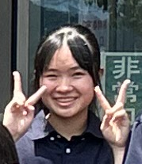

部員紹介 Club Member Introduction

氏名：可愛 可愛子
担当パート：ハーブ
ひとことコメント：うんこブリブリ

氏名：池麺 つけ麺
担当パート：コルネット
ひとことコメント：ラーメン麺、つけ麺、ぼくイケメン
日時：2026年9月23日 1:30 PM – 3:30 PM
場所：谷山サザンホール
住所：鹿児島県鹿児島市谷山中央１丁目５８−４３６０
電話：099-268-3165 / 入場料：無料

ここに顧問の先生からの挨拶文を挿入してください。 生徒たちの一年間の頑張りや、演奏会にかける思いなどを記載する想定です。